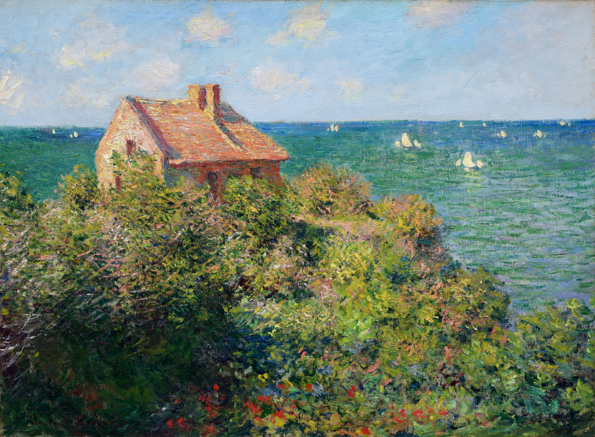

Gear
Software
-
Cursor - AI-assisted coding
-
Obsidian - Notes and learning (like notion, but better)
-
Firefox - Primary web browser
-
Spotify - For music
-
Paint.net - For photo editing
-
Davinci Resolve - For video editing
-
Powertoys - Cool customizations and extra tools for Windows (I use the tool Command Pallete, its like spotlight search but for windows)
-
TranslucentTB - Makes the windows taskbar look better
-
GlazeWM - A window manager for Windows (ironic)
-
Zebar - Adds a toolbar to your screen that shows useful information (comes with GlazeWM)
Hardware
- Cidoo V75 - A mechanical keyboard that makes typing sound and feel better (means that I want to work more)
- Song WH-1000XM5 - Noise-cancelling headphones for focus and music
- Pen and paper - I use pen and paper for some of my note taking or just writing down random ideas
- Moleskine journal - I use this (with a modified version of Reysu's life tracker system) to track my life, habits and thoughts
Productivity (browser extensions)
- Cold Turkey Blocker - A browser extension and app for blocking distracting websites
- Social Focus - More of the same as Cold Turkey
- UnTrap for Youtube - Extension that allows for HEAPS of customization of how youtube looks and works
- Momentum - A browser extension that shows a greeting and a nice background every time you open a new tab (or other stuff)
- Adblock - Blocks ads
- Obsidian Web Clipper - Allows you to save web pages to your obsidian vault with a hotkey
Wallpapers


